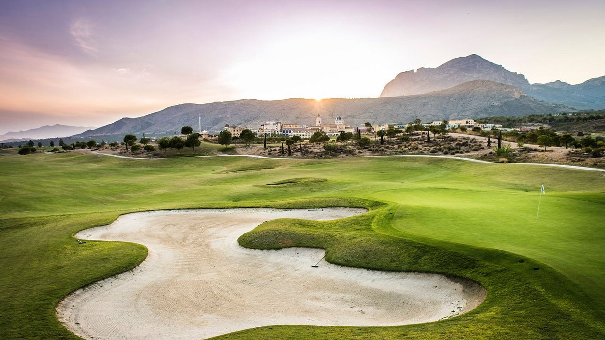
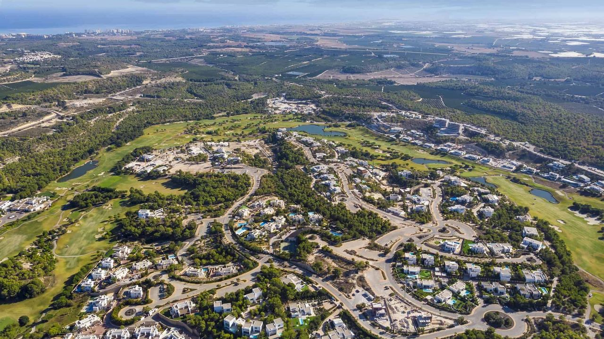
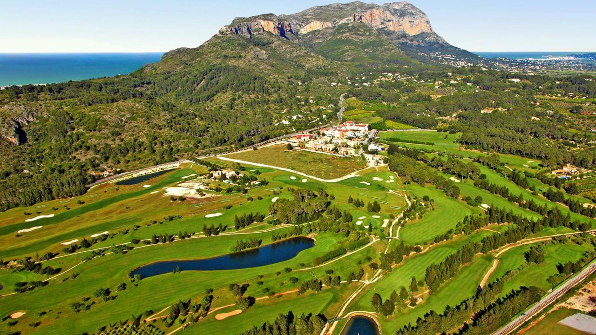
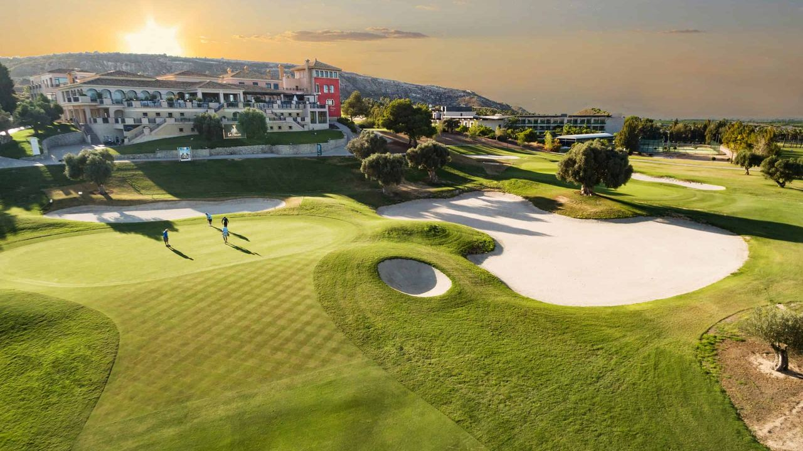
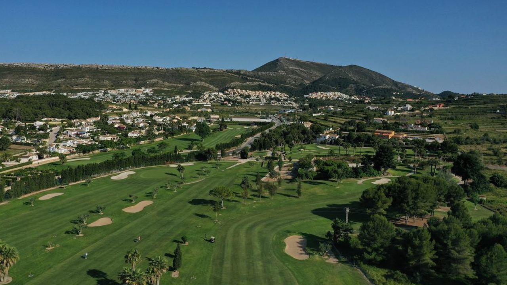
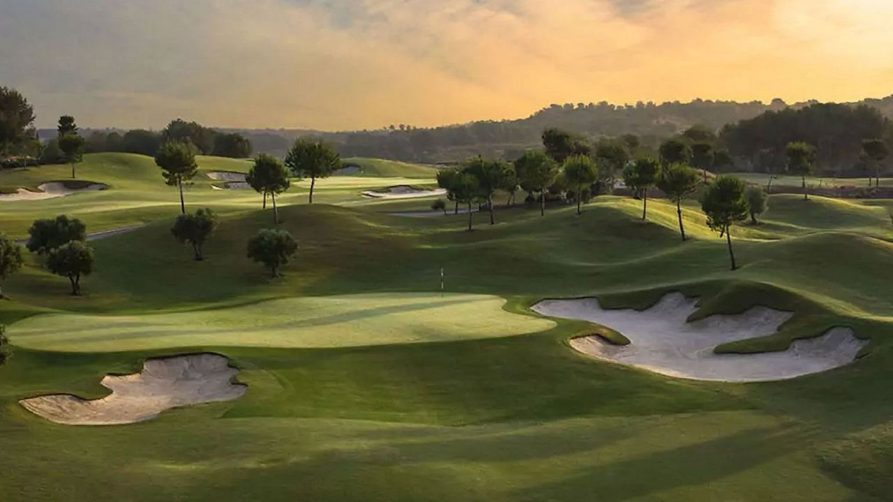

Places · Costa Blanca
The Best Golf Courses on the Costa Blanca
 By Anita Orłowska · · updated · 3 min read
By Anita Orłowska · · updated · 3 min read

In short: The Costa Blanca has more than 20 golf courses and mild weather for golf almost all year. The best known are Las Colinas, Villamartín and La Finca in the south near Torrevieja, Alicante Golf by Seve Ballesteros, Villaitana's two Jack Nicklaus courses near Benidorm, and La Sella and Jávea in the north. Green fees are usually lower than on the Costa del Sol, and several resorts have homes right on the fairways.
Golf on the Costa Blanca is relaxed and good value. Courses are spread along the whole coast, so wherever you live there is a course within about 20–30 minutes. Winter is the main season, with sunny days around 17 °C.
Here are the courses we recommend most often, from south to north and back to the city.
Las Colinas Golf & Country Club – Orihuela Costa

An 18-hole course by Cabell B. Robinson in a quiet valley behind Orihuela Costa, often ranked among the best in Spain. The resort around it has villas and apartments, a clubhouse and a beach club.
La Sella Golf – Dénia

27 holes designed by José María Olazábal at the foot of Montgó, surrounded by natural park scenery. A hotel and spa are on site.
La Finca Golf – Algorfa

A challenging 18-hole course in the Vega Baja, with a hotel and residential areas around it, about 15 minutes from Torrevieja's beaches.
Club de Golf Jávea

A friendly 9-hole course among pines and orange groves, played twice for 18 holes with different tees. Popular with residents and beginners.
Villamartín Golf – Orihuela Costa

A classic course from the 1970s by Paul Putman, with mature trees and water features. Together with Las Ramblas and Campoamor nearby, it makes the south of the coast a golf hub.
Villaitana – Benidorm/Finestrat
Two 18-hole courses by Jack Nicklaus: Levante, a championship course with sea views, and Poniente, a shorter course for all levels. There is a resort hotel with spa. See our homes in Finestrat.
Alicante Golf – Playa de San Juan

A course designed by Severiano Ballesteros, just minutes from the centre of Alicante and the beach, with a golf academy and a hotel next door.
Practical tips
- Season: October to May is the high season; summer mornings and evenings are also pleasant.
- Green fees: usually lower than on the Costa del Sol, often from about €50–120, with twilight and summer discounts.
- Booking: reserve tee times online, especially in winter, when northern European golfers fill the courses.
- Homes on the course: Las Colinas, La Finca, Villamartín and Villaitana all have residential areas next to the fairways.
For the south of Spain, see our guide to golf on the Costa del Sol.
Frequently asked questions
What is the best golf course on the Costa Blanca?
Las Colinas near Orihuela Costa is often ranked the best. Villaitana's Levante course and La Sella are also very highly rated.
How many golf courses are on the Costa Blanca?
More than 20, from Dénia in the north to the border with Murcia in the south.
How much does a round of golf cost on the Costa Blanca?
Usually about €50–120, depending on the course and season, with lower twilight and summer rates.
Can I buy a home on a golf course on the Costa Blanca?
Yes. Las Colinas, La Finca, Villamartín and Villaitana all have villas and apartments next to the course.
Live next to the fairway
If you would like a home with views of the course, get in touch. We know the golf resorts of the Costa Blanca and can show you homes on or near the fairways. See also our homes in Orihuela Costa.
Sources: Federació de Golf de la Comunitat Valenciana · Costa Blanca Tourist Board – Golf · Las Colinas Golf & Country Club